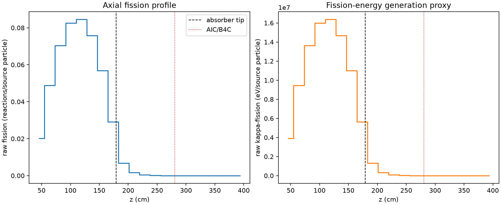
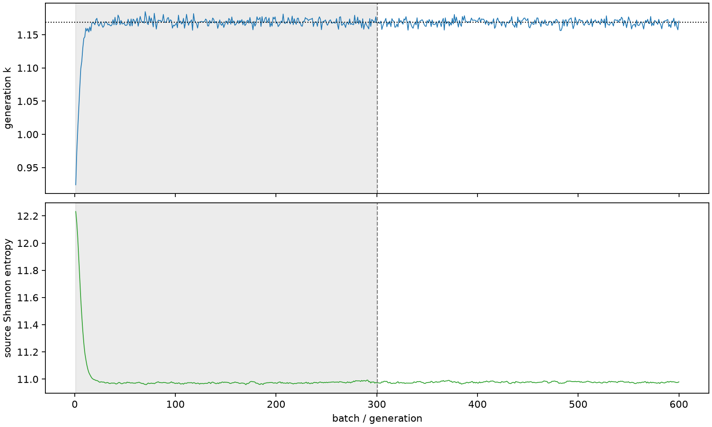

| field | value |
|---|---|
| experiment | V2-STAGE_256_OGRENCI_02-0023 |
| k | 1.1686617813939792 |
| MC standard error | 0.00017635289705344453 |
| seconds | 913.0754946420057 |
| acceptance | not_assessed |
| convergence | review_required |
Completed is output integrity only; physical and statistical review required. Zero tallies do not prove zero production or zero uncertainty.
| diagnostic | value |
|---|---|
| geometric fuel voxels | 5280 |
| zero fission tally voxels | 1136 |
| low signal fuel voxels | 2111 |
| low signal fission share | 8.683811421557806e-05 |
| low signal kappa share | 8.686450579600679e-05 |
| important fission share | 0.9500473789973658 |
| previous filter included | 3169 |
| duration estimate s | 1562.5173488400023 |
| actual minus estimate s | -649.4418541979967 |
| fission relative MC error | statistics |
|---|---|
| all_geometric_fuel | {"voxels": 5280, "positive_mean_voxels": 4144, "zero_mean_voxels": 1136, "undefined_relative_error_voxels": 1136, "median": 0.013225266814553221, "p95": 0.8766768282194044, "maximum": 1.0000000000000002} |
| low_signal | {"voxels": 2111, "positive_mean_voxels": 975, "zero_mean_voxels": 1136, "undefined_relative_error_voxels": 1136, "median": 0.5687927066634416, "p95": 1.0, "maximum": 1.0000000000000002} |
| important_95pct | {"voxels": 1916, "positive_mean_voxels": 1916, "zero_mean_voxels": 0, "undefined_relative_error_voxels": 0, "median": 0.006845844891851111, "p95": 0.010967656314404987, "maximum": 0.013186819246640924} |
| outside_previous_filter | {"voxels": 2111, "positive_mean_voxels": 975, "zero_mean_voxels": 1136, "undefined_relative_error_voxels": 1136, "median": 0.5687927066634416, "p95": 1.0, "maximum": 1.0000000000000002} |
| kappa_fission relative MC error | statistics |
|---|---|
| all_geometric_fuel | {"voxels": 5280, "positive_mean_voxels": 4144, "zero_mean_voxels": 1136, "undefined_relative_error_voxels": 1136, "median": 0.013208073831598256, "p95": 0.8762289636583882, "maximum": 1.0000000000000002} |
| low_signal | {"voxels": 2111, "positive_mean_voxels": 975, "zero_mean_voxels": 1136, "undefined_relative_error_voxels": 1136, "median": 0.5676195235745878, "p95": 1.0, "maximum": 1.0000000000000002} |
| important_95pct | {"voxels": 1916, "positive_mean_voxels": 1916, "zero_mean_voxels": 0, "undefined_relative_error_voxels": 0, "median": 0.006837689003384958, "p95": 0.01095479767782766, "maximum": 0.013172315051312762} |
| outside_previous_filter | {"voxels": 2111, "positive_mean_voxels": 975, "zero_mean_voxels": 1136, "undefined_relative_error_voxels": 1136, "median": 0.5676195235745878, "p95": 1.0, "maximum": 1.0000000000000002} |
| axial bin | fission share | kappa-fission share |
|---|---|---|
| 1 | 0.04225707531659116 | 0.04225865747687907 |
| 2 | 0.10234214134106247 | 0.10234111147637798 |
| 3 | 0.14746823705725903 | 0.14746685879148688 |
| 4 | 0.1729438896313169 | 0.17294224349598572 |
| 5 | 0.17714696331596158 | 0.1771450258447015 |
| 6 | 0.1588407216807827 | 0.15883893051962306 |
| 7 | 0.11914691975906022 | 0.11914553067593975 |
| 8 | 0.06085161084371718 | 0.06085336785214929 |
| 9 | 0.014056507098947516 | 0.014060714064812546 |
| 10 | 0.0036380688995651003 | 0.0036392557087617677 |
| 11 | 0.0009611533122770019 | 0.0009614828529370885 |
| 12 | 0.0002597366950780879 | 0.00025981950770246926 |
| 13 | 6.83437992804547e-05 | 6.836241704586698e-05 |
| 14 | 1.557099978585596e-05 | 1.5576114579906016e-05 |
| 15 | 2.39147082902465e-06 | 2.3938679768914547e-06 |
| 16 | 6.268437570191964e-07 | 6.271604059815144e-07 |
| 17 | 4.193472868568225e-08 | 4.2172634266487007e-08 |
| 18 | 0.0 | 0.0 |
| 19 | 0.0 | 0.0 |
| 20 | 0.0 | 0.0 |
Histories include the inactive-to-active transition at batch 300. kappa-fission approximates fission energy production, not total heat deposition.

